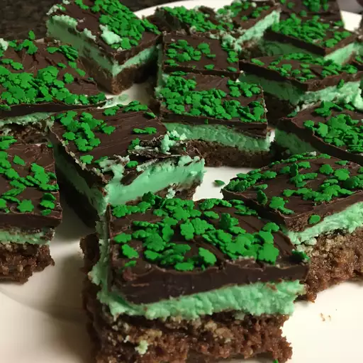

Brownies are the ultimate indulgence for chocolate lovers, offering a rich, fudgy texture that’s hard to resist. With their dense, moist crumb and a deep chocolate flavor, they strike the perfect balance between cake and cookie. Whether you enjoy them straight from the pan or with a scoop of ice cream on top, brownies are the go-to dessert for any occasion, from family gatherings to cozy nights in.
What makes brownies so irresistible is their simplicity and versatility. With just a few basic ingredients, you can create a batch of decadent treats that everyone will love. From classic brownies to creative variations with nuts, swirls of caramel, or a sprinkle of sea salt, there’s a recipe for every preference. Easy to make yet guaranteed to impress, brownies are a baking staple that will always satisfy your sweet cravings.